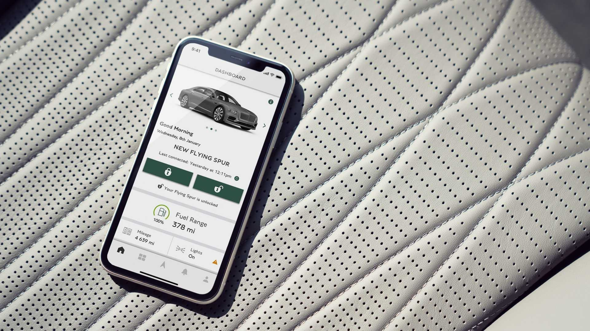
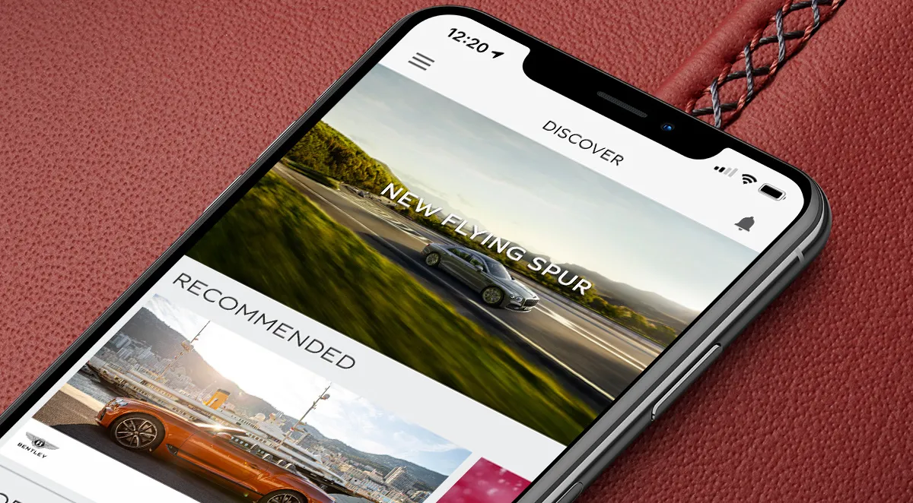
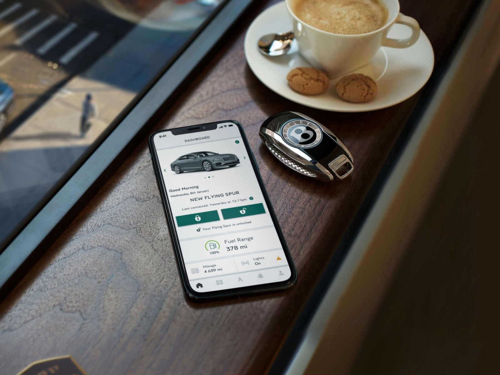

Overview
I supported the Digitalisation and Innovation team in the execution of Bentley's digital transformation.
I designed, maintained and developed Bentley's first UX playbooks and design systems across internal and customer-facing native iOS and Android apps, and supported Bentley's senior leadership in defining the Beyond100 strategy and vision.
My Bentley and the owners' app
I led UX/UI for Bentley's two core customer-facing apps, My Bentley and the Bentley network owners' app, delivering several new iterations and features that brought both in line with the brand guidelines and the new UX playbook and design system.
My Bentley was built with VW Group supplier Quartett Mobile, on the same technology as the Porsche and Audi apps. I ran workshops at their Munich office to define shared functionality, identify where Bentley could differentiate, and test on their connected HMI rigs, aligned with key stakeholders from EE and Sales & Marketing.
Early concepts
I designed early concepts for the curation engine, digital assistants, rear seat entertainment (RSE) controls and infotainment functions, alongside a broad range of internal enterprise and B2B apps across native iOS and Android.
I also collaborated with VW Group brands, including Porsche, Lamborghini, Audi, SEAT and Skoda, on projects and initiatives where group synergies aligned.
Growing digital talent
I helped develop a new digital talent pipeline, recruiting and mentoring 18 digital apprentices, and worked with Manchester Metropolitan University to help establish the UK's first Digital UX degree apprenticeship, shaping the curriculum alongside other local employers such as the BBC.
Gallery




